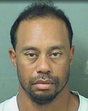
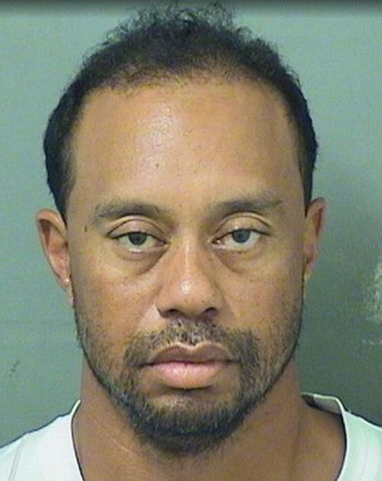
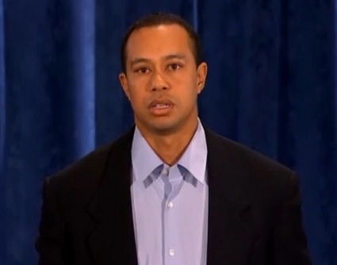
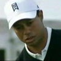
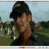

Спустя восемь лет после операции LASIK Тайгер Вудс говорит: "Мое зрение начало ухудшаться".
Узнайте факты о лазерной хирургии Тайгера Вудса и шокирующие подробности о хирурге Тайгера Вудса, докторе Марке Уиттене, и о лазерных офтальмологических центрах TLC.
Тайгер Вудс признался, что после операции LASIK у него возникли проблемы с ночным зрением - 29.05.2017
Во время его ареста по подозрению в вождении в нетрезвом виде офицер спрашивает Тайгера Вудса: "Вы носите очки?";
Тигр отвечает: "При слабом освещении - да".
Кстати, агентство Associated Press сообщило 16.08.2017, что "согласно отчету, опубликованному во вторник полицией, в организме Тайгера Вудса были обнаружены активные ингредиенты для марихуаны, два обезболивающих и два снотворных препарата, когда он был арестован по обвинению в незаконном обороте наркотиков в начале этого года".;
Тайгер Вудс арестован по подозрению в вождении в нетрезвом виде - 29.05.2017
Из статьи: Тайгер Вудс был найден спящим за рулем утром в день своего ареста по подозрению в вождении в нетрезвом виде, свидетельствуют полицейские записи.
Согласно отчету об аресте, опубликованному во вторник, полиция Юпитера, штат Флорида, обнаружила Вудса рано утром в понедельник на обочине дороги, за рулем его автомобиля Mercedes-Benz 2015 года выпуска с включенными стоп-сигналами и мигающим правым поворотником. Прочитать статью

Лечащий врач Тайгера Вудса, Марк Уиттен, обязал выплатить пациенту 1 миллион долларов - FoxNews.com 13.01.2011
Из статьи: Окулисту, который рекламирует корректирующую операцию, которую он провел звезде гольфа Тайгеру Вудсу, было предписано выплатить жителю округа Уэстморленд более 1 миллиона долларов за процедуру 2001 года, в результате которой у пациента появилось помутнение или двоение в глазах...
Федеральный иск направлен против центров TLC LASIK из-за плохого скрининга и требует статуса коллективного иска - Business Week, 18.03.2010
Из статьи: Федеральный иск, поданный в среду в Южной Каролине, обвиняет глазные клиники по всей стране в проведении операций пациентам с ранее существовавшими заболеваниями, которые должны были исключить их из списка кандидатов, в результате чего у этих пациентов возникли послеоперационные проблемы... "Все действия ответчиков были направлены на то, чтобы скрыть пациентов"истинное состояние и управление ожиданиями пациентов до тех пор, пока этот пациент больше не перестанет представлять угрозу для активов ответчиков", - написали адвокаты. Юристы Холлмана утверждают, что в этой базе данных они нашли около 200 других пациентов TLC, которые сталкивались с проблемами, похожими на проблемы их клиента... В общей сложности Холлман требует возмещения ущерба в размере до 180 миллионов долларов...
Прочитать статью ; Прочитать судебный процесс . Смотреть видео:
Прочитай ЛАЗЕРНЫЕ рэкетиры
Руководители TLC подвергают критике соучредителя TLC доктора Джеффри Мачата в отместку за дачу показаний в пользу Plantiff в судебном процессе о халатности LASIK
Жюри присудило награду поврежденный пациент LASIK 4 миллиона долларов, в значительной степени основанных на показаниях соучредителя TLC доктора Джеффа Мачата. В отместку за решение присяжных, создавшее прецедент, медико-промышленный комплекс LASIK начал атаку на доктора Мачата, что привело к его потере мировой известности в индустрии LASIK. Позже доктор Мачат отказался от своих показаний. Следующая статья была опубликована в EyeWorld, журнале Американского общества катарактальной и рефракционной хирургии (ASCRS).
Из статьи: Шмидт также спросил Мачата, подвергался ли он словесным оскорблениям со стороны коллег после оглашения приговора, намекнув, что это могло повлиять на его изменение показаний... "У меня есть много коллег, которые очень недовольны мной", - сказал Мачат. "У меня есть члены корпорации, которые недовольны я..." - "Ты был проклят?" - спросил Шмидт. "Да."Подвергались ли вы словесным нападкам - например, на конференции [ASCRS]?" "Да." "В результате этого вас попросили выйти из консультативного совета TLC?" "Да". Ранее в своих показаниях Мачат описал встречу с адвокатом, генеральным директором и медицинским директором TLC после судебного разбирательства и вердикта присяжных.
Источник: Мэрилин Хэддрилл. Адвокат защиты просит о новом судебном разбирательстве по делу о LASIK стоимостью 4 миллиона долларов . EyeWorld, ноябрь 2002 года.
Представитель TLC Laser Eye Centers Тайгер Вудс говорит: "Я никогда не думал о том, кому причиняю боль". 19.02.2010

Редакция "Общественного мнения": У нас есть сообщение для Тайгера Вудса - Тайгер, ты когда-нибудь задумывался о людях, которые пережили осложнения, изменившие их жизнь, после того, как подверглись влиянию тобой пройти курс LASIK? Вы знаете или вас это волнует, сколько жизней было разрушено из-за LASIK? И хотя потеря четкого, поддающегося коррекции зрения - это еще не все, последствия неудачного результата LASIK могут быть ошеломляющими. Это затрагивает семьи - родителей, супругов, братьев и сестер, детей. Это может привести к потере карьеры и снижению удовольствия от жизни. Это может привести к инвалидности, депрессии и даже самоубийству. Мы бы сказали: "Мы не знаем, как вы спите по ночам", но, похоже, для вас это не проблема. Мы надеемся, что вы измените свою жизнь и обретете искупление.
Тайгер Вудс разбил машину ночью - CNN.com 27.11.2008

Редакционная статья об автоаварии Тайгера Вудса : Какую роль, если таковая имелась, он сыграл Тайгер Вудс' ночное видение сыграете ли вы роль в аварии, произошедшей посреди ночи 27.11.2009? Сообщается, что обычная процедура LASIK снижает эффективность вождения в ночное время:"После традиционной операции LASIK у 34% пациентов наблюдалось снижение распознавания мишеней (мишенями были рекламные вывески, дорожные знаки,[ПОЖАРНЫЕ ГИДРАНТЫ] и пешеходы)... В среднем, чем выше степень близорукости, тем хуже вождение в ночное время."( прочитать статью ) TLC Laser Eye Centers сообщает, что "До операции LASIK у Тайгера был показатель -11, что составляет худший процент среди тех, кто страдает близорукостью".;( ссылка )
Неясно, как произошла автомобильная авария и последовавшие за ней скандал, связанный с внебрачными связями это повлияет на профессиональную карьеру Тайгера Вудса в гольфе, его статус знаменитости и рекламные контракты. На момент написания этой статьи лазерные офтальмологические центры TLC, похоже, стоят на своем. ( прочитать статью ).

LASIK и профессиональный гольф
Широко известно, что Тайгер Вудс перенес операцию на глазу LASIK для коррекции зрения. Вполне вероятно, что поддержка Tiger Woods технологии LASIK в лазерных офтальмологических центрах TLC побудила тысячи людей пройти эту операцию. Из тех, кто под влиянием Тайгера Вудса решился на операцию LASIK, некоторые, несомненно, пострадали от неблагоприятных последствий операции.
Не столь широко известен тот факт, что в мае 2007 г., USA Today цитирует Тайгера Вудса как говорится, " Мое зрение начало ухудшаться ". В статье говорится, что Тайгер перенес повторную операцию после турнира серии Мастерс 2007 года. Golf.com также сообщалось " Вудс перенес вторую лазерную операцию на глазу ".
Примечание редакции: Мы не удивлены, что зрение Тайгера Вудса ухудшилось. Медицинские исследования показывают, что визуальные результаты LASIK недолговечны."Эти результаты показывают, что, хотя рефракционные результаты после LASIK относительно хороши в краткосрочной перспективе, со временем они имеют тенденцию к снижению". ~ Залентейн и др., 2009
Сообщается, что несколько профессиональных игроков в гольф столкнулись с такими осложнениями, как проблемы с ночным зрением , хроническая сухость глаз или ухудшение зрения после LASIK, включая Кенни Перри , Ретиф Гусен , Кевин На , Пол Станковски , Ян Леггатт , Виджай Сингх , Джон Джейкобс , Пол Параджекас , Питер Лонард , Пэдрейг Харрингтон , и Скотт Хох . Было бы интересно узнать, сколько игроков в гольф, у которых возникли проблемы после операции LASIK, под влиянием Тайгера Вудса решились на операцию.
Коллекция памятных тарелок "Хозяйка Тайгер Вудс"
Хирург Тайгера Вудса, доктор Марк Уиттен из лазерного офтальмологического центра TLC
В ноябре 2008 года, Тайгер Вудс - хирург, Доктор Марк Э. Уиттен , был приговорен судом присяжных к выплате 850 000 долларов по иску о врачебной халатности LASIK, поданному пациентом, который утверждает, что в результате LASIK у него были необратимые повреждения глаз. Подробнее о Новости .
Прочитайте, как выполняется операция LASIK Тайгер Вудс - хирург, Марк Уиттен Операция LASIK обернулась катастрофой для молодой женщины с большими зрачками. Смотреть судебный процесс и статья .
Кликните сюда чтобы прочитать об иске о врачебной халатности LASIK, поданном в августе 2009 года против Тайгер Вудс - хирург, Марк Уиттен , сделанный пациентом, который в настоящее время слеп на один глаз.
Похоже, что TLC в Роквилле, где Тайгер Вудс - хирург, Марк Уиттен, в октябре 2009 года компания LASIK получила письмо с предупреждением от FDA( прочтите предупреждающее письмо ).
Gatorade бросает Тайгера Вудса - Los Angeles Times 26.02.2010
Из статьи: В пятницу Gatorade заявила, что прекращает спонсорские отношения с Вудсом. Это заявление было сделано через неделю после того, как сильнейший игрок в гольф в мире ненадолго появился на экране, чтобы принести извинения по телевидению. В заявлении, опубликованном пресс-секретарем Gatorade Дженнифер Шмит, компания объявила: "Мы больше не видим роли Tiger в наших маркетинговых усилиях и прекратили наши отношения.
Несвоевременное заимствование привело TLC к банкротству - St. Louis Post-Dispatch 1/8/2010
Из статьи: Несмотря на то, что на этой неделе представитель TLC Vision из-за знаменитостей стал объектом шуток Джея Лено, Тайгер Вудс сейчас беспокоит TLC меньше всего... Шутки в сторону, судьба TLC была решена задолго до того, как ее ведущий начал привлекать нежелательные заголовки... Экономический спад сильно ударил по TLC и ее конкурентам, сократив объем операций вдвое.
Неправильное толкование Зеленого: исследование о потерях среди тигров - The Wall Street Journal, 1/7/2010
Из статьи: Несколько спонсоров Woods усомнились в том, что скандал с одним представителем компании может повлиять на стоимость их акций. "Тайгер Вудс не сыграл никакой роли в росте курса акций нашей компании", - написал представитель TLC Vision Corp. в электронном письме. "Наши акции находились под давлением в течение многих месяцев". Две недели назад компания подала заявление о защите от банкротства по главе 11.
TLC Vision, спонсор Tiger Woods, подает заявление о банкротстве - Bloomberg, 21.12.2009
Из статьи: TLC Vision Corp., офтальмологическая компания, спонсирующая гольфиста Тайгера Вудса, обратилась за защитой от банкротства, чтобы реструктурировать свой долг... "Наши отношения с Тайгером Вудсом продолжаются без изменений", - заявил Стивен Филлипс, внешний представитель TLC в Fleishman Hillard, в электронном письме.почта... TLC Vision управляет центрами лазерной коррекции зрения в США и Канаде. Никакие другие филиалы, включая центры лазерной коррекции зрения TLC, не участвуют в регистрации.
TLC получила уведомление о делистинге на бирже Nasdaq - St. Louis Business Journal от 17.12.2009
Из статьи: TLC Vision Corp. сообщила в четверг, что получила уведомление от фондовой биржи Nasdaq, уведомляющее компанию о том, что ее обыкновенные акции будут исключены из списка на Nasdaq Global Market... Если компания не подаст апелляцию, торговля ее обыкновенными акциями будет приостановлена с открытием торгов 28 декабря.
Источник: Элин Нордегрен планирует расстаться с Тайгером Вудсом - People 16.12.2009
Из статьи: Праздники могут привести к окончательному выяснению отношений в браке Тайгера Вудса и Элин Нордегрен, сообщает PEOPLE источник, близкий к жене гольфиста. "Она планирует расстаться с Тайгером". Другой источник сообщает: "Она приняла решение. Тут не о чем думать: он никогда не изменится", - сообщает PEOPLE в следующем номере, который появится в газетных киосках в пятницу.
Врач, который лечил Тайгера Вудса, упомянут в деле о допинге - myfoxboston.com 15.12.2009
Из статьи: Он признался в супружеской неверности, и теперь Тайгеру Вудсу, возможно, придется защищаться от обвинений в употреблении наркотиков. Канадский врач, который лечил Тайгера Вудса, обвиняется в том, что он давал лучшим спортсменам препараты, повышающие работоспособность.
Спонсорские сделки Вудса, доверие к ним сильно пошатнулось - USA Today, 14.12.2009
Из статьи: По данным Nielsen IAG, спонсоры Вудса с 29 ноября не выпустили ни одной платной телерекламы с участием своего звездного спонсора. Но Вудс все еще проводит питчинг для лазерных офтальмологических центров TLC. Пользователи, которые зашли на сайт TLC в понедельник, все еще могли услышать записанное голосовое сообщение от Вудса, в котором он расхваливал результаты своей глазной операции LASIK. "Привет, это Тайгер Вудс. В течение многих лет я играл в гольф с невидимым гандикапом. Невидимый для всех, кроме меня", - говорит Вудс. Надеюсь, что для Team Tiger это не будет эпитафией на Мэдисон-авеню.
Видение TLC сохранить Тайгера Вудса в качестве представителя - St. Louis Business Journal 22.12.2009
По словам Джеймса Хайланда, вице-президента по связям с инвесторами и корпоративным коммуникациям, лучший игрок в гольф в мире появляется в радио- и печатной рекламе TLC Vision с 2000 года. "Тайгер Вудс важен для TLC Vision", - сказал он. "Наши отношения с ним продолжаются без изменений. Это частное дело, и у нас нет дальнейших комментариев."Хайленд отказался раскрывать сумму контракта компании с Вудсом в долларах.
TLC получила предупреждение от фондовой биржи Торонто - St. Louis Business Journal от 30.11.2009
Из статьи: TLC Vision Corp. Фондовая биржа Торонто предупредила, что, исходя из финансового состояния компании, фондовая биржа рассматривает возможность продолжения листинга. Компания по уходу за глазами и рефракционной хирургии заявила в понедельник, что у нее есть 30 дней, чтобы выполнить требования для продолжения листинга.
Убытки лазерного офтальмологического центра TLC в 3 квартале увеличились - St. Louis Business Journal от 17.11.2009
Из статьи: Чистый убыток TLC Vision Corp. в третьем квартале увеличился до 10,04 млн долларов, а продажи упали на 10% до 51,63 млн долларов по сравнению с аналогичным периодом прошлого года. Компания заявила, что продала свои доли в нескольких центрах амбулаторной хирургии и сократила расходы, поскольку продолжает переговоры с кредиторами о реструктуризации своего долга... TLC сообщила, что в третьем квартале она продала один амбулаторный хирургический центр, принадлежащий мажоритарному акционеру, в Финиксе и два амбулаторных хирургических центра, принадлежащих миноритарному акционеру, за общую чистую цену продажи в 2,2 миллиона долларов. TLC сообщила, что за первые девять месяцев этого года она закрыла четыре рефракционных центра, контрольный пакет акций которых принадлежит ей... TLC сообщила, что также ведет переговоры с "некоторыми третьими сторонами" относительно продажи некоторых непрофильных активов.
FDA направило предупреждающие письма в клиники TLC Vision и LasikPlus - Reuters, 15.10.2009
Из статьи: Более десятка офтальмологических центров LASIK имеют неудовлетворительные системы отчетности о любых побочных эффектах у пациентов, перенесших операцию по коррекции зрения, сообщили в четверг органы здравоохранения США...В клиники, включая некоторые центры TLC Vision Corp и LCA Vision Inc., были разосланы письма с предупреждениями.
Акции TLC Vision не соответствуют требованиям Nasdaq - St. Louis Business Journal от 22.09.2009
Из статьи: Обыкновенные акции TLC Vision Corp. упали ниже минимальной рыночной стоимости в 15 миллионов долларов и минимальной цены предложения в 1 доллар, что вызвало письмо с предупреждением от Nasdaq... Nasdaq сообщила, что у компании есть время до 15 декабря, чтобы выполнить требование в размере 15 миллионов долларов, и до 15 марта, чтобы восстановить соблюдение правила минимальной цены предложения в 1 доллар... В противном случае Nasdaq исключит компанию из списка.
Смогут ли лазерные офтальмологические центры TLC выполнить свои "Пожизненные обязательства"? - Новый выпуск Lasik от 24.09.2008
Из статьи: TLC продолжает рекламировать свою "пожизненную приверженность" последующему уходу за пациентами, однако финансовое положение компании остается мрачным, и неясно, как долго TLC сможет сохранять свои двери открытыми... Прошлые успехи TLC, по крайней мере частично, были достигнуты благодаря поддержке самого известного в мире игрока в гольф Тайгера Вудса. Однако, как и многие пациенты, перенесшие операцию LASIK, Вудс обнаружил, что результаты операции LASIK не всегда длительные.
Тайгер Вудс, "Мое зрение начало ухудшаться" - USA Today, 15.05.2007
В мае 2007 года USA Today процитировала Тайгер Вудс как говорится, " Мое зрение начало ухудшаться ". В статье говорится, что Тайгер перенес повторную операцию после турнира серии Мастерс 2007 года.
Игрок в гольф, перенесший операцию на сердце и инсульт, говорит, что лазерная терапия разрушила его жизнь
"Несмотря на то, что у меня было хорошее зрение, мне пришлось сделать операцию lasik, чтобы улучшить зрение вдаль при занятиях легкой атлетикой - софтболом, гольфом, судейством. Мне сказали, что для чтения мне придется носить "читалки". После операции мое зрение вдаль улучшилось, но было трудно читать информацию о событиях с читерами. После жалобы мне сказали, что я хороший кандидат на операцию по улучшению зрения. Мне дали контактные линзы, которые, по их словам, улучшат зрение после улучшения. Благодаря контактным линзам у меня было отличное зрение как вдаль, так и вблизи, поэтому я согласился на улучшение. Тем временем, однако, мне пришлось заменить аортальный клапан. Во время этой операции тромб попал в мозг, что привело к инсульту. Я оправился как от протезирования, так и от инсульта и смог видеть, за исключением периферического зрения слева. Мне сделали КФ-коррекцию, в результате чего зрение стало нечетким как вдаль, так и вблизи. Теперь, спустя год после усовершенствования, огромных затрат и нескольких пар очков, я могу фокусироваться только на изображениях, которые находятся примерно в 20 футах от меня. Моя жизнь разрушена. Я всегда был очень активным физически, но теперь могу снимать только на улице. В гольфе у меня было 3 очка с гандикапом, и я больше не могу пробить 100 очков и вынужден играть с корректировщиком. Я могу печатать и читать только с компьютерным увеличением шрифта. Это все равно что жить за грязным лобовым стеклом. Поскольку я вижу примерно на 20 футов, постоянные проверки зрения - это шутка. По сути, я слепой на 20/20. Мне нужны 20-футовые футболки для гольфа, стремянка и два "кэдди"."